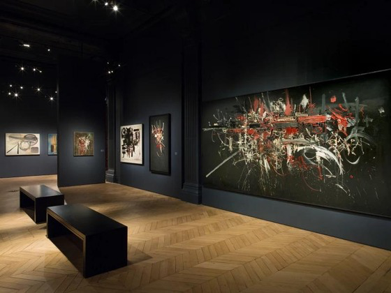

LA GALERIE · DEPUIS 1994
Une passion,
trente ans d’histoire.
Un regard sur l’expressionnisme · Paris

NOTRE HISTOIRE
Un lieu de rencontres et de découvertes.
Fondée par Paul Dechewsky, Dédal des Couleurs célèbre la force de la peinture expressionniste et les artistes qui la font vivre.
Depuis 1994, la galerie invite chacun à prendre le temps de regarder, de ressentir et de partager une expérience artistique.
Découvrir les œuvres ↗1994Depuis
ParisLieu
ExpressionnismeSpécialité